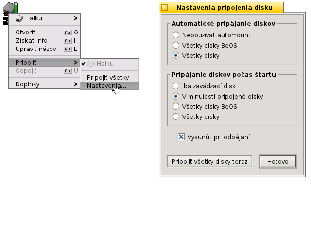
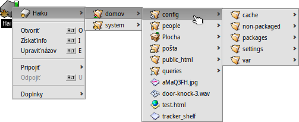
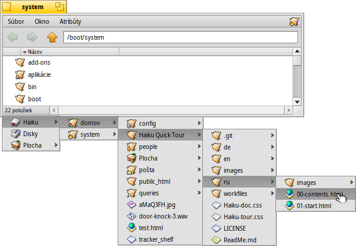
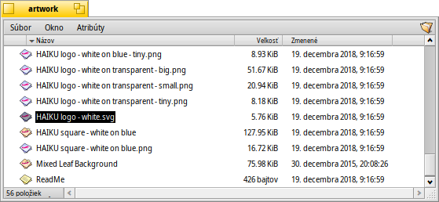
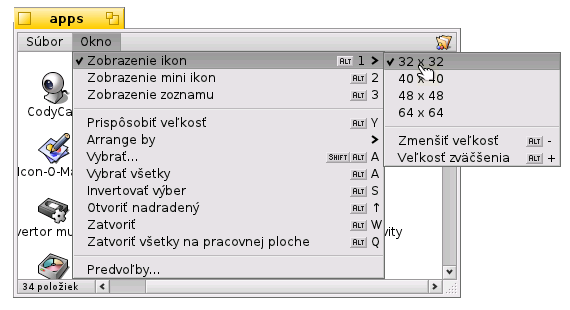
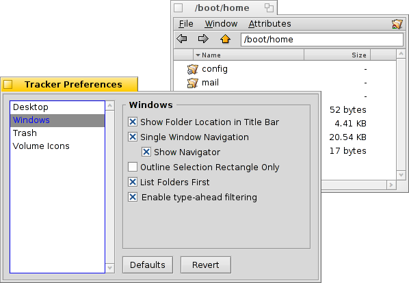
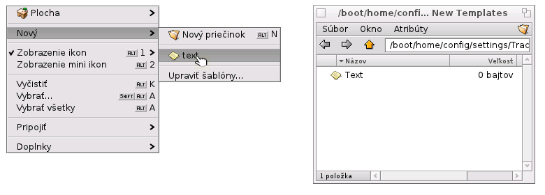
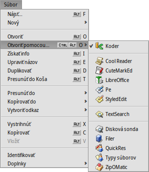
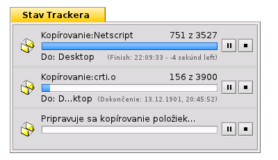

Slovenčina
Slovenčina Français
Français Deutsch
Deutsch Italiano
Italiano Русский
Русский Español
Español Svenska
Svenska 日本語
日本語 Українська
Українська 中文 ［中文］
中文 ［中文］ Português
Português Suomi
Suomi Magyar
Magyar Português (Brazil)
Português (Brazil) English
English| Index |
|
Pripájanie zväzkov Navigácia Vzhľad Predvoľby Trackera Práca so súbormi Stav transakcie |
Tracker
Tracker je grafické rozhranie na všetky vaše súbory. Umožňuje vám vytvárať nové súbory a priečinky alebo nájsť, spustiť alebo premenovať ako aj skopírovať či odstrániť tie existujúce.
Tým, že je to aplikácia ako každá iná (Plocha je iba celoobrazovkové okno v pozadí), Tracker sa so svojimi oknami zobrazuje v Paneli a môže byť ukončený alebo reštartovaný. Najrýchlejší spôsob na ukončenie a reštartovanie spadnutého či zamrznutého Trackera (alebo Plochy) je zavolať Monitor tímov.
 Pripájanie zväzkov
Pripájanie zväzkov
Aby ste mohli mať prístup k svojmu, CD, USB kľúču atď., musíte najprv daný zväzok pripojiť, čo znamená upozorniť systém o ňom. Toto sa robí kliknutím pravým tlačidlom na Plochu alebo už načítaný zväzok (ako zavádzací disk) a vybraním zväzku zo submenu . To isté menu nájdete aj v Paneli.
Tu sú aj , aby ste nemuseli manuálne pripájať po každom spustení počítača.
Hore uvedené nastavenia automaticky pripoja každé úložné zariadenie, ktoré pripojíte/vložíte a taktiež pri spustení pripojí všetky disky, ktoré boli pripojené predtým.
Navigácia
Keď dvakrát kliknete na priečinok, Tracker ho predvolene otvára vždy v novom okne a nadradený priečinok nechá otvorený. Takto sa vám môže plocha rýchlo preplniť.
Tomu môžete zabrániť držaním klávesu OPT, čím sa automaticky zavrie nadradený priečinok.
Toto platí aj pri navigácii klávesnicou. O tom sa viac dozviete v téme Klávesové skratky a kombinácie klávesov.
Prechádzanie vašimi priečinkami je jedným z hlavných účelov Trackera, rovnako ako správcovia súborov v iných platformách. Tracker v Haiku má niekoľko unikátnych funkcií, ktoré vám pomôžu robiť to efektívne.
Pohyb cez submenu
Namiesto dvojitého klikania vašou cestou priečinkami, existuje aj lepší spôsob na pohyb v nich:
Kliknite pravým tlačidlom na priečinok, okrem zvyčajného kontextového menu tu nájdete aj submenu aktuálneho priečinka, ktoré vám umožní presunúť sa o úroveň nižšie. Jednoducho sa posúvajte dole hierarchiou až kým nenájdete hľadaný súbor a kliknutím ho otvorte. Snímka hore zobrazuje obsah priečinka /boot/home/config/.
Ak tento proces zopakujete počas držania súboru myšou, môžete ho presunúť tam, kde myš uvoľníte.
Podobnú metódu môžete využívať v akomkoľvek okne Trackera:
Kliknite na oblasť vľavo dole, kde sa zobrazuje počet súborov v priečinku, a dostanete submenu pre každú úroveň nad vašou aktuálnou lokalitou. Odtiaľ sa môžete presúvať smerom dole cez priečinky ako obvykle.
Pamätajte, že Plocha je najvyššia úroveň, keďže tam Tracker zobrazuje pripojené zväzky. Takže ak sa chcete presunúť do iného disku, budete najprv musieť navigovať úplne navrch (Plocha), odkiaľ sa dostanete do želaného disku.
Rovnaký druh navigovania cez submenu dostanete aj vtedy, keď myšou pretiahnete súbor nad iný súbor. Po chvíli držania, vyskočí submenu a vy sa môžete pohybovať smerom dole k vášmu cieľu. Ak ste ťahali počas držania pravého tlačidla myši, tak si môžete vybrať medzi skopírovaním, presunutím alebo vytvorením odkazu na súbor vtedy, ako myš uvoľníte.
Presúvanie sa na súbory pomocou predikcie počas písania
Tento koncept už možno poznáte zo správcov súborov v iných operačných systémoch: napísaním prvých pár znakov názvu súboru preskočíte na prvý súbor so zhodujúcim sa začiatkom názvu. Haiku tento nápad vzal ešte o krok ďalej. Ak sa žiaden názov nezačína na zadané znaky, systém preskočí na prvý názov, ktorý tento reťazec obsahuje. A ak žiaden názov neobsahuje tento reťazec, zhoda sa bude hľadať v atribútoch.
V snímke hore môžete vidieť veľa súborov začínajúcich sa na „Haiku logo“, čím sa stáva jednoduchý prístup písania začiatku názvu zbytočným. Keď ale napíšete „web“, Haiku preskočí na prvú zhodu v názve: „Haiku logo - website“. Vami zadané znaky sa zobrazujú v ľavom dolnom rohu, kde je normálne uvedený počet všetkých súborov. Sekundu po zadaní znaku sa ukazovateľ vráti do svojho pôvodného stavu, čo vám umožní začať nové hľadanie.
Filtrovanie počas písania
Namiesto presúvania sa počas písania je existuje iná možnosť na filtrovanie súborov, ktorých názvy nezodpovedajú zadanému reťazcu. Touto metódou môžete dramaticky zvýšiť prehľadnosť, hlavne keď manipulujete s preplnenými priečinkami. Oddeľovaním klávesmi SHIFT SPACE môžete dokonca triediť pomocou viacerých reťazcov.
Narozdiel od presúvania sa, filtrovanie zostane aktívne až kým nestlačíte kláves ESC alebo nezatvoríte okna (alebo neopustíte priečinok v prípade, že používate Navigáciu v jednom okne ).
Filtrovanie počas písania sa dá nastaviť v Nastaveniach Trackera.
Vzhľad

Okná Trackera ponúkajú tri rôzne režimy zobrazenia z menu :
(ALT 1) - Veľké ikony, ich rozmery môžete meniť v submenu alebo zväčšiť/zmenšiť ich veľkosť pomocou ALT +/-.
(ALT 2) - Malé ikony.
(ALT 3) - Podrobný zoznam všetkých vašich súborov s možnosťou zobraziť/skryť ich atribúty. (Pozrite sekciu Atribúty.)
Menu ponúka niekoľko iných funkcií:
(ALT Y) - Zmení veľkosť okna na ideálnu.
- Dostupné iba v režime Zobrazenia ikon alebo mini ikon, submenu vám dáva možnosť usporiadať súbory podľa rôznych vlastností:
, , , , , , ,
- Obráti usporiadanie
(ALT K) - Zarovná všetky ikony do neviditeľnej mriežky. Držaním SHIFT a menu sa zmení na , čím sa navyše vytriedia všetky ikony podľa vyššie vybraného kritéria.
(SHIFT ALT A) - Vyberie súbory podľa a regulárneho výrazu.
(ALT W) - Zatvorí okno. Držaním SHIFT sa menu zmení na , čo zatvorí každé okno Trackera.
(ALT Q) - Zatvorí všetky okná Trackera na aktuálnej pracovnej ploche. Užitočná skratka v prípade, že ste zabudli držať kláves OPT počas otvárania priečinkov, čím sa vám zaplnila pracovná plocha.
Ak chcete iba zmeniť usporiadanie niekoľkých ikon a nie (ALT K). V tom prípade iba vyberte tieto ikony a myšou ich pretiahnite na požadované miesto. Kým ich pustíte, držte kláves ALT. Tým sa ikony zarovnajú do neviditeľnej mriežky.
Použitie ostatných funkcií by malo byť jasné, čím nám zostávajú predvoľby Trackera.
Predvoľby Trackera
otvorí panel s ponukou niekoľkých nastavení, ktoré by mali byť po vyskúšaní, ak nie hneď, jasné. Keďže všetky tieto nastavenia sa živo aplikujú, okamžite uvidíte nimi vykonané zmeny.
Tu sú v skratke popísané menej jasné nastavenia:
- Rozhodnite, či sa všetky pripojené disky majú zobraziť priamo na Ploche alebo v okne zobrazenom po kliknutí na ikonu Disk na Ploche.
- Môžete nastaviť , tzn. dvojitým kliknutím sa priečinok neotvorí v novom okne, ale v pôvodnom, čím nahradí prehľad nadradeného okna. Toto nie je rovnaké ako kliknutie počas držania klávesu OPT (popísané vyššie), lebo stratíte uloženú veľkosť a pozíciu okna.
Kým nastavíte Tracker na Navigáciu v jednom okne, pretože vám to môže byť povedomejšie, odporúčame vám najprv vyskúšať prehliadanie založené na menu, čo môže byť oveľa rýchlejšie, keď si na to už zvyknete. Na druhej strane ponúka Navigácia v jednom okne Navigátor, do ktorého môžete vložiť názov cesty alebo použiť tlačidlá späť, dopredu alebo hore.
Aktiváciou možnosti sa bude filtrovať okno Trackera počas písania, čím sa zobrazia iba súbory, v ktorých názvoch alebo atribútoch sa nachádza daný reťazec. Pozrite vyššie.
- Nastavenie správania pri vymazávaní súboru.
- Nastavenie farby voliteľného indikátora voľného miesta, ktoré je zobrazené vedľa ikony disku.
Tento panel je, mimochodom, dostupný aj ako Tracker z Panelu.
Práca so súbormi
V kontextovom menu, vyvolanom kliknutím pravým tlačidlom na označený súbor, sa nachádza väčšina príkazov z menu .
Ako sa zvyčajne sú príkazy pomerne jasné.
- Nájsť súbor alebo priečinok. Ďalšie informácie nájdete v téme Požiadavky.
- Vytvorí nový priečinok alebo akýkoľvek iný súbor podľa šablóny.
Vybraním sa otvorí priečinok /boot/home/config/settings/Tracker/Tracker New Templates. Pri vytvorení nového súboru v tomto priečinku vám bude ponúknutý jeho typ spolu s názvom súboru a inými atribútmi ako šablóna v menu . Ako príklad tu máme súbor „Text“ s typom súboru text/plain. Ďalšie informácie nájdete v téme Typy súborov.
- Submenu ponúka všetky aplikácie, ktoré vedia pracovať s daným typom súboru.
Preferovaná aplikácia, v ktorej sa otvorí súbor pri dvojitom kliknutí, je označená. Toto submenu zobrazuje zoznam tých aplikácií, ktoré vedia pracovať s daným typom súboru, v tomto prípade textového súboru typu text/plain. Ďalšie uvedené sú aplikácie, ktoré dokážu pracovať s nadradeným typom vo všeobecnosti, tu text/*. Posledné sú tie, ktoré vedia pracovať so všetkými súbormi. Ak nekliknete na aplikáciu zo submenu, ale na položku , otvorí sa panel:

Tu znova nájdete programy, ktoré boli uvedené v submenu. Označením jedného z nich a kliknutím na tlačidlo zmeníte preferovanú aplikáciu pre každý súbor daného typu súboru, tu text/plain.
-

Tento panel zobrazuje informácie o vybranom súbore a umožňuje vám nastaviť predvolenú aplikáciu a keď expandujete príslušnú časť panelu, tak aj oprávnenia a vlastníka. Kliknutie na cestu ju otvorí v okne Trackera.
, a - umožní vám premenovať alebo duplikovať súbor či presunúť vybraný súbor do Koša.
, a - vám umožňujú presunúť, kopírovať alebo vytvoriť odkaz na vybraný súbor použitím metódy navigácie cez submenu. Držaním SHIFT počas vyvolania menu dostanete možnosť vytvoriť relatívny odkaz.
, a - umožňujú vám vystrihnúť, kopírovať a vložiť súbor s použitím schránky. Držaním SHIFT počas vyvolania menu môžete súborov, možno z ďalšieho priečinka, ktoré môžete vložiť niekam inam neskôr. Tiež môžete počas držania SHIFT vložiť kopírované súbory do schránky ako odkazy.
- zistí a nastaví typy súborov ak ešte neboli nastavené, napr. ak ste presúvali súbory pomocou wget, ktorý sám typy súborov nenastavuje. Držaním SHIFT počas vyvolania menu zmeníte položku na , ktorá identifikuje a opraví typ súboru v tom prípade, že bol predtým nesprávny.
- ponúkne vám všetky bežné doplnky Trackera, ktoré vedia pracovať s vybraným súborom. Ďalšie informácie nájdete v téme Doplnky Trackera.
Stav transakcie
Keď kopírujete, presúvate alebo odstraňujete súbory, Tracker zobrazuje vývoj operácie stavovým oknom. Ak začnete viac ako jednu transakciu, každá operácia dostane svoje vlastné zobrazenie stavu.
Vpravo sú dve tlačidlá na pozastavenie alebo úplné prerušenie transakcie. Dočasné pozastavenie môže byť užitočné pri presúvaní veľkých súborov. Napríklad budete možno potrebovať rýchlo spustiť náročnú aplikáciu. Kopírovanie veľkého množstvá dát zapchá dátové pásmo pevného disku, čo spomalí vašu prácu.